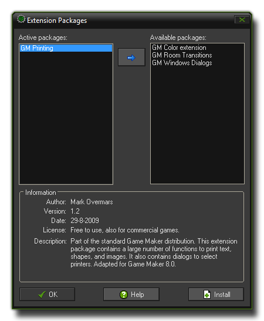
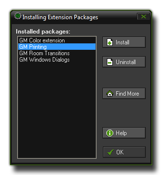

Extension Packages
Extension packages extend the possibilities of GameMaker:Studio.
An extension package can add a set of actions to GameMaker:Studio, or it can add a number of additional functions and constants to the GML language built into GameMaker:Studio. When extension packages are available to you, help about these is placed in the Help menu at the top of the main window (see The Help Menu).
Adding an Extension
You can add an extension by right clicking on the extension resource and selecting Create Extension, or by clicking the Add Existing Extension button on the main window resource toolbar, or even by opening the
Resources drop down menu and clicking on Select Extension Packages. Whatever method you choose will open the following window:

In this form you can indicate which extension packages must be used in the game you are making. On the left there is the list of Used packages and on the right is the list of Available packages, and to move
a package from one list to the other, simply select it and press the button between the lists. When selecting a package a short description is usually given at the bottom (but not always if the package has been made by third
party developers), and further help may also be available by pressing the Help button.
To install new packages or uninstall existing extension packages, press the Install button and the following window will open :

You can see a list of all extension packages available (these are stored by default in the "Extensions" folder of the root directory where you have GameMaker:Studio installed). By selecting a package and clicking the
Uninstall button the package is removed from the system, and pressing install will open a standard load file window where you can select a new package from your computer to make available within GameMaker:Studio.
These ready to install packages are labelled *.gex files and more can be found on the internet as many third party developers create them and share them.
NOTE : This functionality is limited to the Standard Version and above of GameMaker:Studio.
For more information on Extension Packages please see :